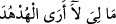
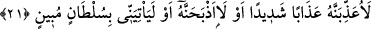
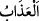
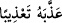

“Ve şöyle dedi: Hüdhüdü niçin göremiyorum?”
Bana ne oldu ki araya giren bir engel sebebiyle mi yoksa başka bir şeyden dolayı mı
hüdhüdü göremiyorum?
Sonra onun kaybolduğunu anlayınca sözünü değiştirdi ve şöyle devam etti: “Yoksa
kayıplara mı karıştı?”Yoksa o kayıp mı? Bana ne oldu ki kuşlar içinde Hüdhüd’ü
göremiyorum veya gözüm ona ilişmiyor ya da bu topluluktan kaybolanlardan mı oldu?
el-Vasît’ta der ki: “
” Hüdhüde ne oldu ki ben onu göremiyorum,
demektir. Araplar “
(Bana ne oluyor ki seni üzgün görüyorum?)” derler. Bu
sözün mânâsı, ‘Sana ne oldu?’ demektir. Ancak bu, mânânın açıkladığı bir tür
döndürmedir.”
et-Te’vîlâtü’n-Necmiyye’de der ki: “İşâret etmektedir ki hükümdarlara gereken,
memleketlerinde teyakkuz hâlinde olmak, halklarının işlerini iyi idâre edip yüklenmek,
halkının küçüklerinin de büyüklerinin de ortadan kaybolmaları kendilerine gizli
kalmayacak şekilde onların en büyüğünü arayıp sorduğu gibi en küçüğünü de arayıp
sormaktır. Tıpkı Süleyman (a.s.)’ın kuşlardan en küçüğünün durumunu bile sorup
araştırmış, onun ortadan kaybolduğu bir an bile ondan gizli kalmamıştır. Sonra halkına
şefkatinin fazlalığından dolayı, eksikliği ve kusuru kendisine havâle etmiş ve “Bana ne
oluyor ki hüdhüdü göremiyorum?” demiş, “Hüdhüde ne oldu ki onu göremedim?”
dememiştir. Yine tebeasının maslahatlarını gözeterek ve onlara edeb öğreterek: “Yoksa
kayıplara mı karıştı?” Yâni iznim olmadan gözümün önünden kaybolanlardan mı oldu?
demiştir.
Hayâtü’l-hayevân’da der ki: “Hüdhüd, tabîatı itibarıyla kötü kokulu bir hayvandır.
Çünkü yuvasını çer çöpün içine yapar. Bu onun cinsinde yaygındır.”
el-Fetâve’z-Zeyniyye’de der ki: “Hüdhüd kuşunun etini yemek câiz midir, değil
midir?” diye soruldu. “Evet, câizdir.” diye cevap verdi.
Sonra Süleyman (a.s.), hüdhüdün kaybolması için bir mâzereti olmaması durumunda
onu tehdîd etti ve şöyle dedi:
21. Ona şiddetli bir azâb edeceğim ya da onu boğazlayacağım. Yahut da bana
(mâzeretini belirten) açık bir delil getirecek!
And olsun ki “Ona şiddetli bir azâb edeceğim”
“
” şiddetle acı vermek, “
” onu azabda çok tuttu/çok azâb etti, demektir.
Yâni Süleyman (a.s.) şöyle dedi: ‘Tüylerini yolup onu güneşe veya karıncaların
yiyeceği yere atmak ya da zıddına bir hayvanla kafese koymak yahut çiftinden ayırmak
gibi ona şiddetli bir azâb edeceğim.’